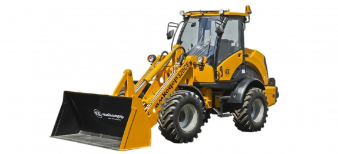

АМКОДОР 320СЕ
Погрузчик универсальный АМКОДОР 320СЕ – многоцелевая машина компактного класса и предназначена для использования в строительстве, в коммунальном и сельском хозяйстве, в морских и речных портах, на складах, где требуется эффективная работа в ограниченном пространстве.
АМКОДОР 320СЕ оснащен дизелем фирмы Deutz (Германия) экологического класса Stage IIIA, что особенно важно при работе в коммунальном хозяйстве мегаполисов, где предъявляются повышенные требования к экологии.
На машинах установлена гидрообъемная трансмиссия фирмы Sauer-Danfoss (Дания) с электронным управлением, ведущие мосты фирм Carraro (Италия) или Dana (Италия) с самоблокирующимися дифференциалами повышенного трения и многодисковыми тормозами в «масле», что обеспечивает бесступенчатое изменение скорости движения, плавность хода и высокую проходимость. В сочетании с шарнирно-сочлененной рамой с углом складывания ±40°, удобной и комфортабельной кабиной с хорошей обзорностью это обеспечивает эффективную работу в стесненных условиях.
Гидравлическое устройство для быстрой смены рабочих органов погрузчика позволяет произвести замену рабочих органов в течение 1-2 минут без выхода оператора из кабины. При установке активных рабочих органов необходимо дополнительно подсоединить несколько быстроразъемных муфт для соединения гидравлических трубопроводов.
Для управления рабочим оборудованием в кабине установлено два гидравлических джойстика. Один - универсальный, который управляет стрелой и ковшом, имеет переключатель реверса движения машины и две электрические кнопки для управления 3-й гидравлической функцией. Второй джойстик - 3-позиционный с фиксацией для 4-й гидравлической функции, например, для привода щётки и других активных быстросменных рабочих органов, которым необходимы 2 гидравлические функции. Это позволяет адаптировать рабочие органы специализированных фирм-изготовителей.
В базовом исполнении погрузчик оснащен ковшом, все остальные быстросменные рабочие органы заказываются дополнительно.
Погрузчик оснащён комфортабельной кабиной, в базовую комплектацию которой входит кондиционер-отопитель, регулируемая рулевая колонка и сиденье, переключатель 12/24В, гнездо для подключения мобильного телефона и МР3 плейера.
АМКОДОР 325С | АМКОДОР 325С-01 | ||
|---|---|---|---|
Грузоподъемность, кг | 2600 | ||
Устройство для быстрой смены рабочих органов | Механическое | Гидравлическое | |
Номер основного ковша | 325С.45.01.010 | 325С.51.00.000 | |
Вместимость ковша номинальная, м3 | 1.4 | ||
Ширина режущей кромки ковша, мм | 2500 | ||
Высота разгрузки, мм | 2600 | 2650 | |
Вылет кромки ковша, мм | 950 | 900 | |
Радиус поворота, мм | 5800 | ||
Вырывное усилие, кН | 60 | ||
Статическая опрокидывающая нагрузка в сложенном (±38°) положении, кН | 52 | ||
Масса эксплуатационная, кг | 8800 | ||
Дизель | Д-245 | ||
Мощность номинальная | 77 кВт (105 л.с.) при 2200 об/мин | ||
Трансмиссия | Гидромеханическая | ||
Скорость передвижения, вперед/назад, км/ч: 1-я 4-я | 5.8/5.9 32/-- | ||
Угол качания заднего моста, град | ±12 | ||
Дифференциал | Повышенного трения | ||
Рабочая тормозная система | Многодисковые тормозные механизмы в «масле», с раздельным гидравлическим приводом по мостам | ||
Стояночная и аварийная тормозные системы | Однодисковый сухой тормозной механизм, с пружинным сжатием и гидравлическим растормаживанием | ||
Рулевое управление | Шарнирно-сочлененная рама, с гидравлическим приводом и гидравлической обратной связью, аварийным насосом с приводом от ведущих колес | ||
Шины | 21.3-24 | ||
Тип гидросистемы | Двухнасосная с приоритетным клапаном для рулевого управления | ||
Тип гидрораспределителя | 3-секционный с прямым гидравлическим управлением | ||
Время гидравлического цикла, с: подъем разгрузка опускание | 3.9 1.2 3.0 | ||
Длина, в транспортном положении с основным ковшом, мм | 6500 | ||
Ширина по ковшу, мм | 2500 | ||
Ширина по колесам, мм | 2410 | ||
Высота по крыше кабины, мм | 3370 | ||